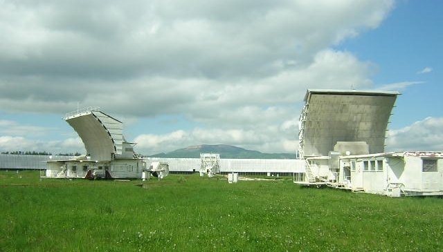

О проекте
Радиоастрономический центр прогноза солнечной активности
Часть информационной системы наблюдений Солнца на РАТАН-600: автоматический сбор, хранение, обработка и публикация данных, диагностика солнечной плазмы и прогноз активности.
Задачи сайта

Сайт предназначен для диагностики солнечной плазмы и прогноза солнечной активности в режиме онлайн по регулярным данным многоволнового комплекса радионаблюдений Солнца на РАТАН-600. На нём:
- трёхсуточный прогноз мощных вспышек по критерию Танаки–Эноме;
- анализ данных — визуализация и обработка сканов;
- поиск наблюдений и файловые архивы данных;
- вычисления: эфемериды EFRAT-2, диаграмма направленности, моделирование радиоизлучения структур в атмосфере Солнца;
- информационные материалы о инструменте и наблюдениях.
Для сопоставления с РАТАН-600 исторически собирались данные других радиотелескопов и радиогелиографов (Нобеяма 1,7 см, ССРТ 5,2 см, радиогелиограф Нансе) и спутниковые изображения (SOHO MDI/EIT, GONG, Hinode XRT, Big Bear Hα); часть этих источников с тех пор закрыта (подробнее).
Коллектив
Участники проекта — сотрудники ГСИ РАТАН-600 и лаборатории солнечных исследований СПбФ САО РАН:
| Богод Владимир Михайлович, д.ф.-м.н. | научный консультант |
|---|---|
| Гараимов Владимир Илларионович, к.ф.-м.н. | автор проекта, технический консультант |
| Тохчукова Сусанна Хасановна, к.ф.-м.н. | руководитель проекта, разработчик сайта |
| Кальтман Татьяна Ильинична, к.ф.-м.н. | моделирование |
| Котельников Василий Сергеевич | обработка данных |
| Модин Егор Викторович | разработка на IDL |
| Балдин Станислав Викторович | система регистрации |
| Хубиева Нина Викторовна | журнал наблюдений |
Проект частично поддержан грантом РФФИ 06-02-17034-а «Моделирование плазменных структур в солнечной атмосфере по радиоастрономическим наблюдениям на РАТАН-600» и программой СПбНЦ РАН 2007 г. «Создание веб-сервера для радиоастрономического прогноза солнечной активности».
Публикации
Методические
- Богод В. М. Радиотелескоп РАТАН-600 в 24 цикле солнечной активности. I. Новые возможности и задачи. Астрофиз. бюлл., 66, № 3 (2011).
- Богод В. М., Алесин А. М., Перваков А. А. II. Многооктавный спектрально-поляризационный комплекс высокого разрешения для солнечных исследований. Астрофиз. бюлл., 66, № 3 (2011).
- Балдин С. В., Гараимов В. И. III. Система сбора данных и управления солнечным спектральным комплексом на РАТАН-600. Астрофиз. бюлл., 66, № 3 (2011).
- Тохчукова С. Х. IV. Информационная система наблюдений Солнца на РАТАН-600. Астрофиз. бюлл., 66, № 3 (2011); Astrophys. Bull. 66, 409–419.
- Коржавин А. Н., Львов В. Н., Тохчукова С. Х., Цекмейстер С. Д. Развитие эфемеридной поддержки наблюдений на РАТАН-600. Астрофиз. бюлл., 67, № 2, 237 (2012).
- Тохчукова С. Х., Коржавин А. Н., Богод В. М., Курочкин Е. А., Шендрик А. В. Расчёт горизонтального размера ДНА РАТАН-600 в режиме «Южный сектор с Плоским отражателем». Астрофиз. бюлл., 69, № 3, 377 (2014).
Вспышечно-продуктивные области и прогноз
- Tanaka H., Enome S. The microwave structure of coronal condensations and its relation to proton flares. Solar Physics, 40, 123 (1975).
- Богод В. М. и др. Астрофиз. бюлл., 73, 505 (2018) — методика прогнозирования вспышек по наблюдениям на РАТАН-600.
- Tokhchukova S., Bogod V. Detection of the long-term microwave “darkening” before the July 14, 2000 flare. Solar Physics, 212, 99–109 (2003).
- Богод В. М., Тохчукова С. Х. Особенности микроволнового излучения активных областей, генерирующих мощные солнечные вспышки. Письма в АЖ (2003).
- Bogod V. M., Yasnov L. V. Polarization of microwave radio emission of flare-producing solar active regions. Solar Physics, 255, 253–271 (2009).
Работы по моделированию — на странице Вычисления.
Космическая погода: где смотреть
| Ресурс | Что там |
|---|---|
| NOAA SWPC | официальный центр прогнозов космической погоды США; машиночитаемые данные (GOES, ACE/DSCOVR) |
| XRAS.RU | лаборатория солнечной астрономии ИКИ РАН и ИСЗФ СО РАН: прогноз вспышек и магнитных бурь |
| ИЗМИРАН | центр прогнозов космической погоды |
| Helioviewer | интерактивный просмотр изображений Солнца (NASA) |
| NASA DONKI | база событий: вспышки, КВМ, протонные события, бури |
| NOAA NCEI | архив геофизических данных, в том числе исторических SWPC |
| SpaceWeatherLive | вспышки, бури и сияния в реальном времени |
| САО РАН | Специальная астрофизическая обсерватория РАН |
Контакты
Вопросы, замечания и предложения по работе системы: susan@sao.ru.
Санкт-Петербургский филиал Специальной астрофизической обсерватории РАН, лаборатория солнечных исследований.